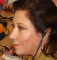

This report was not read at the meeting
with students of Yerevan State University,
because it's rector, Aram Simonyan,
cancelled this event. On November 30, 2006 it was read by Nursun Erel during the meeting with students of H. Acharyan University in faculty of journalism.
POLITICAL JOURNALISM

I’m very pleased to be here today and it’s a real privilege to address such a distinguished young people. In fact I have to say my future colleagues.
Now we are discussing the political coverage and interviews. We journalists must have a difference than the average people on the street. Because we believe that if a dog bites a man that is not news, but if a man bites the dog then this is the big news.
At this globalization period every day more and more I believe the importance of a free press and media, otherwise we would all be forced to live in our separate isolated small worlds.
For years and years Turkish and Armenian society were both misled about the realities of the past I believe. The 1915 tragedies were discussed only one sided in both countries. In a way both countries’ politicians preferred such an atmosphere because they were afraid of fighting with dogmas, stereotypes and taboos. It was easier for them to convince themselves and their people that these dogmas were the virtual realities. Because of this, there is no diplomatic relations between Turkey and Armenia now. But is it in favor of our nations? I certainly believe that it is not. Especially for the next generations, I believe that we have to create a better atmosphere far from cliches. We have to force our government officials to act on this.
I will give you concrete examples.
As you may remember, last year in Istanbul a conference was held to discuss the Armenian issue, but due to some pressure coming from the Turkish nationalist and fundamentalist circles the conference was cancelled.
I make weekly interviews for an English daily newspaper The New Anatolian, at the same time my interviews are published in a Turkish daily newspaper too.
So for that week’s interview I decided to talk to a Turkish history professor Mr. Baskin Oran who was also going to attend to the conference and speak there. My interviews subtitle was, “If they could speak, what would they tell…”. So in the interview I asked all these questions and let him talk.
But my editor also asked me to find someone else who was at the opposite side of the controversy. Because some people were purposely not invited to the conference, because they were believed to be against such a discussion. One of them was the head of Turkish Institute of History and I asked Mr. Yusuf Halacoglu all the controversial questions too.
As a journalist in such case I believe that I did my best to add to create a transparent atmosphere for the issue to be discussed.
Now, I will give you another example. Some years ago at my first Yerevan visit I met your distinguished Foreign Minister Mr. Vartan Oskanyan. I knew that he was a member of a family among the deported ones in those years. That time I was working for a television station, Channel D, passing through a street in Yerevan one day, we met a huge cue in front of the American embassy I learned that they were the ones who were trying to get visa and go to United States. I also learned that in those days everyday at least 30 families were abandoning Armenia because of hard living conditions and poverty. So I asked him, “Isn’t this a kind of a deportation today, that all your citizens are trying to leave their homeland? Isn’t this because of inadequate policies of your government?”
So I believe that journalists are not like average people, once they meet the politicians and make an interview they can’t ask them only rosy questions or they can’t let their conversation to go around the brilliant words of the politicians. Their task is pushing them to create a better world for their peoples.
One last point is this. Last year I was in Azerbaijan and I had the chance of visiting the remote town of Imishli. I met there thousands of Karabakh immigrants, they were living in incredibly hard and inhuman conditions like train wagons. It was a beautiful autumn day that I’ve been there, but it was not difficult to me to guess about the freezing days of coming winter. This was a very clear picture of a human tragedy happening at this century. The result is 30 thousand deaths and thousands of people deported from their homelands.
The next day I had the chance of meeting Azerbaijan president Ilham Aliyev, he was very happy and eager to talk about the promising future of the oil industry in Azerbaijan, he was telling us figures like 300 billion dollars for the next 20 years expected oil revenues. I asked him about the hard living conditions of the Karabakh immigrants, he said he ordered them to be taken out from the train wagons and provided with better houses in a time of one year. I hope his order has been taken. Maybe our distinguished colleague Alekper Aliyev can kindly inform us on that issue.
During my Armenia visit, I wish I could also see Karabakh region with my own eyes and search for the truth there too. Who knows maybe I will be able to realize this during this visit of mine.
But dear friends, don’t forget that even at this century we are facing an odd virtual issue realized by U.S Administration. Don’t we remember President Bush’s claims about the mass destruction weapons in Iraq. Mainly because of such a virtual reality the Iraqi operation has been started. Now where are the mass destruction weapons?
So dear colleagues these were the topics I’d like to share with you today and if you have any further questions I’d be happy to answer them. Thank you very much.
Nursun Erel
Now we are discussing the political coverage and interviews. We journalists must have a difference than the average people on the street. Because we believe that if a dog bites a man that is not news, but if a man bites the dog then this is the big news.
At this globalization period every day more and more I believe the importance of a free press and media, otherwise we would all be forced to live in our separate isolated small worlds.
For years and years Turkish and Armenian society were both misled about the realities of the past I believe. The 1915 tragedies were discussed only one sided in both countries. In a way both countries’ politicians preferred such an atmosphere because they were afraid of fighting with dogmas, stereotypes and taboos. It was easier for them to convince themselves and their people that these dogmas were the virtual realities. Because of this, there is no diplomatic relations between Turkey and Armenia now. But is it in favor of our nations? I certainly believe that it is not. Especially for the next generations, I believe that we have to create a better atmosphere far from cliches. We have to force our government officials to act on this.
I will give you concrete examples.
As you may remember, last year in Istanbul a conference was held to discuss the Armenian issue, but due to some pressure coming from the Turkish nationalist and fundamentalist circles the conference was cancelled.
I make weekly interviews for an English daily newspaper The New Anatolian, at the same time my interviews are published in a Turkish daily newspaper too.
So for that week’s interview I decided to talk to a Turkish history professor Mr. Baskin Oran who was also going to attend to the conference and speak there. My interviews subtitle was, “If they could speak, what would they tell…”. So in the interview I asked all these questions and let him talk.
But my editor also asked me to find someone else who was at the opposite side of the controversy. Because some people were purposely not invited to the conference, because they were believed to be against such a discussion. One of them was the head of Turkish Institute of History and I asked Mr. Yusuf Halacoglu all the controversial questions too.
As a journalist in such case I believe that I did my best to add to create a transparent atmosphere for the issue to be discussed.
Now, I will give you another example. Some years ago at my first Yerevan visit I met your distinguished Foreign Minister Mr. Vartan Oskanyan. I knew that he was a member of a family among the deported ones in those years. That time I was working for a television station, Channel D, passing through a street in Yerevan one day, we met a huge cue in front of the American embassy I learned that they were the ones who were trying to get visa and go to United States. I also learned that in those days everyday at least 30 families were abandoning Armenia because of hard living conditions and poverty. So I asked him, “Isn’t this a kind of a deportation today, that all your citizens are trying to leave their homeland? Isn’t this because of inadequate policies of your government?”
So I believe that journalists are not like average people, once they meet the politicians and make an interview they can’t ask them only rosy questions or they can’t let their conversation to go around the brilliant words of the politicians. Their task is pushing them to create a better world for their peoples.
One last point is this. Last year I was in Azerbaijan and I had the chance of visiting the remote town of Imishli. I met there thousands of Karabakh immigrants, they were living in incredibly hard and inhuman conditions like train wagons. It was a beautiful autumn day that I’ve been there, but it was not difficult to me to guess about the freezing days of coming winter. This was a very clear picture of a human tragedy happening at this century. The result is 30 thousand deaths and thousands of people deported from their homelands.
The next day I had the chance of meeting Azerbaijan president Ilham Aliyev, he was very happy and eager to talk about the promising future of the oil industry in Azerbaijan, he was telling us figures like 300 billion dollars for the next 20 years expected oil revenues. I asked him about the hard living conditions of the Karabakh immigrants, he said he ordered them to be taken out from the train wagons and provided with better houses in a time of one year. I hope his order has been taken. Maybe our distinguished colleague Alekper Aliyev can kindly inform us on that issue.
During my Armenia visit, I wish I could also see Karabakh region with my own eyes and search for the truth there too. Who knows maybe I will be able to realize this during this visit of mine.
But dear friends, don’t forget that even at this century we are facing an odd virtual issue realized by U.S Administration. Don’t we remember President Bush’s claims about the mass destruction weapons in Iraq. Mainly because of such a virtual reality the Iraqi operation has been started. Now where are the mass destruction weapons?
So dear colleagues these were the topics I’d like to share with you today and if you have any further questions I’d be happy to answer them. Thank you very much.
Nursun Erel